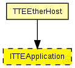
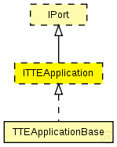

This documentation is released under the Creative Commons license
This documentation is released under the Creative Commons license(no description)
The following diagram shows usage relationships between types. Unresolved types are missing from the diagram.
The following diagram shows inheritance relationships for this type. Unresolved types are missing from the diagram.
| Name | Type | Description |
|---|---|---|
| IPort | module interface |
Interface of TTEthernet ports. A port is a virtual instance that can receive critical traffic through its gates. |
| Name | Type | Description |
|---|---|---|
| TTEEtherHost | compound module |
Module for a TTEthernet Host. Contains a EtherLLC for best-effort traffic, a TTEPHYPort module as physical port, sync module (Sync) and a TTEScheduler module. The Host is configured by the provided TTEthernet XML network configuration (network_configuration parameter) and uses the device_name parameter to find its config. The configuration is done by the BufferManager that deletes itself at runtime. |
moduleinterface ITTEApplication extends IPort { gates: //Input gate for the incoming SchedulerActionTimeEvent messages input schedulerIn; }
This documentation is released under the Creative Commons license